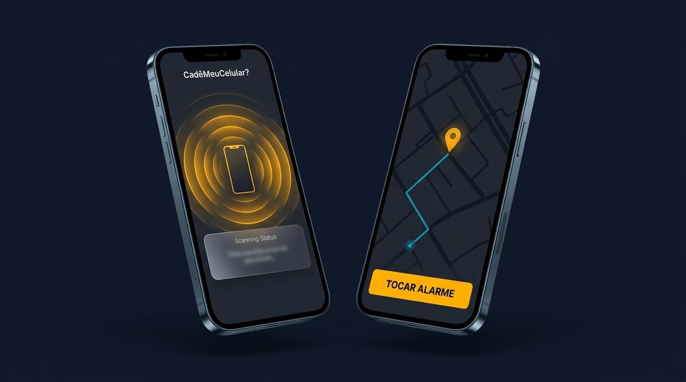

Perdeu no silencioso, embaixo do sofá ou esqueceu no Uber? O CadêMeuCelular? dispara um alarme perfurante de 110dB, ativa o radar sônico e localiza seu aparelho mesmo sem internet.
Escaneie o QR Code para download imediato
Compatível com iOS 15+ e Android 10+ • +120 mil downloads
CadêMeuCelular? v3.4
Sinal Bluetooth Mesh Estável
iPhone 15 Pro
Av. Paulista, 1578
Clique para testar o som do alarme
Esqueça os localizadores comuns que dependem de sinal 4G perfeito. Nosso sistema foi desenvolvido para cenários críticos.
Ignora imediatamente o botão físico de silencioso, fone de ouvido conectado e o modo "Não Perturbe". Emite frequências agudas calibradas para perfurar estofados, almofadas e bolsas com máxima reverberação acústica.
Quando a bateria atinge 3%, o app dispara um pacote criptografado em ultra-baixa energia com as coordenadas GPS exatas, altitude e horário antes do desligamento total.
Perdeu em um subsolo sem 4G? Celulares de outros usuários na rede retransmitem a localização de forma anônima e 100% criptografada.
Projeta instantaneamente na tela bloqueada uma mensagem com número de resgate, oferta de recompensa e botão de ligação rápida com 1 toque.
Reconhecimento acústico neural em background: bata 2 palmas ou dê um assobio no quarto e seu celular começará a piscar o flash e apitar.
Escolha uma situação comum para ver como o algoritmo do CadêMeuCelular? age imediatamente:
Quando o desespero de perder o celular bate, cada segundo conta. Telas de alto contraste, sem propagandas ou telas confusas.
Varredura direcional de alta precisão baseada em ondas sonoras e Ultra Wideband (UWB). Mede a proximidade física em tempo real até 50cm de precisão.

Veja o que diz quem já evitou prejuízos de milhares de reais com o app.
"Deixei meu celular no banco de trás do Uber na chuva. O motorista não ouvia minhas ligações normais porque estava no silencioso. Disparei o alarme pelo navegador do meu notebook: ele ouviu na hora e fez a volta pra me devolver!"
Mariana Santos
São Paulo, SP • iPhone 15 Pro
"A bateria estava em 4% quando perdi no shopping. Achei que estava perdido pra sempre. Quando cheguei em casa e abri o app, o último ping de baixa bateria me mostrou a loja exata onde esqueci no balcão."
Rodrigo Carvalho
Belo Horizonte, MG • Galaxy S24
"A função de bater palmas é mágica. Toda manhã eu perdia 10 minutos procurando o celular dentro de cobertor ou roupa. Bato duas palmas, ele apita na hora. Vale cada centavo!"
Camila Figueiredo
Curitiba, PR • Xiaomi 13
Configuração em menos de 45 segundos. Compatível com Android e iPhone. Recupere seu aparelho no momento que mais precisar.
É assim que o bom samaritano verá seu telefone:
09:41 • Segunda-feira
⚠️ APARELHO PERDIDO
"Por favor, ligue para meu irmão neste número ou devolva na portaria. Recompensa garantida!"